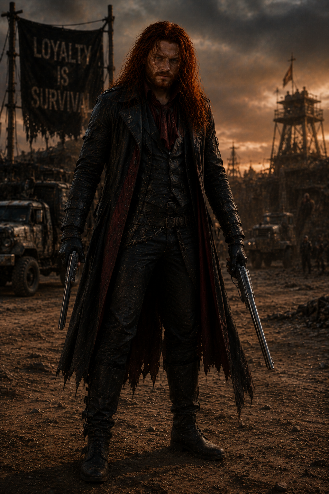

O primeiro filho de Jack e Alice. Seu destino, função e perdas após o Dia D permanecem protegidos até a conclusão da lore oficial.
Alucard cresceu sob duas heranças: a disciplina de Jack e o compromisso de Alice com a vida. O restante do arquivo ainda aguarda autorização do autor.